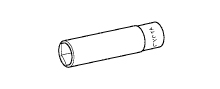
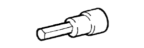
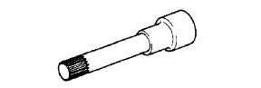

ГОЛОВКА БЛОКА ЦИЛИНДРОВ > РЕМОНТ > Подготовка

| Фирменный герметик Seal Packing Black от компании Тойота, Three bond 1207B или аналогичный | - |
| Фирменный герметик 1324 от компании Тойота, Three Bond 1324 или аналогичный | - |
| Индикатор часового типа для отверстий | - |
| Датчик СО/CH | - |
| Компрессометр | - |
| Устройство для проверки кривизны шатуна | - |
| Нутромер | - |
| Индикатор часового типа с магнитной подставкой | - |
| Стропы для подъема двигателя | - |
| Комплект плоских щупов | - |
| Cкребок для удаления остатков прокладок | - |
| Нагреватель | - |
| Нож | - |
| Магнитный захват | - |
| Микрометр | - |
| Оправка поршневых колец | - |
| Съемник поршневых колец | - |
| Пластмассовый молоток | - |
| Сминаемый пластмассовый калибр Plastigage | - |
| Прецизионная поверочная линейка | - |
| Пресс | - |
| Развертка | - |
| Инструмент для снятия уступа | - |
| Устройство для проверки пружин | - |
| Стальной угольник | - |
| Тахометр | - |
| Стробоскоп | - |
| Динамометрический ключ | - |
| Устройство для расточки седел клапанов | - |
| V-образная призма | - |
| Штангенциркуль | - |
| Проволочная щетка | - |
| Деревянный брусок | - |
|  | 09012-1C120 | Удлиненная торцевая головка 12 мм | - |
 | 09012-2C510 | Удлиненная торцевая головка 19 мм | - |
| 09012-2C520 | Удлиненная торцевая головка 24 мм | - |
| 09013-1C510 | Торцевая головка "TORX" E6 Е-типа | - | |
 | 09013-1C530 | Торцевая головка "TORX" E8 Е-типа | - |
 | (09013-6C100) | Торцевой шестигранный ключ 5 мм | - |
 | 09040-00011 | Комплект торцевых гаечных ключей | - |
|  | (09043-20080) | Торцевая шестигранная головка 8 | - |
 | (09043-20100) | Торцевая шестигранная головка 10 | - |
| (09043-30140) | Прямой торцевой гаечный ключ 14 | - | |
|  | 09043-50100 | Двенадцатигранный ключ 10 мм | - |